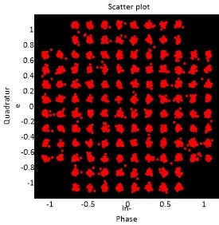

RESEARCH HIGHLIGHT · LAB MILESTONE
Successful Transmission of 128-QAM SC-FDM over Optical Wireless Channel
BONLAB researchers achieved a breakthrough in optical wireless communications by successfully transmitting and demodulating 128-QAM Single-Carrier FDM signals using FPGA real-time DSP pipelines.
Read full story →